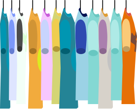
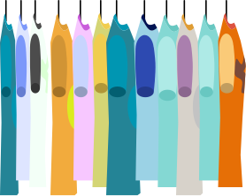

VI ER.
Vi skaber et lokalt samlingspunkt med et unikt udvalg af kvalitetstøj i en afslappet og alternativ stil, hvor alle bliver behandlet som ligesindede.
MISSION.
Vi skaber et lokalt samlingspunkt med et unikt udvalg af kvalitetstøj i en afslappet og alternativ stil, hvor alle bliver behandlet som ligesindede.
VISION.
Vi skaber et miljø, hvor kunderne føler sig velkomne, trygge og inspirerede til at udtrykke deres personlige stil gennem vores udvalg.
VORES VÆRDIER.
IMØDEKOMMENDE
Alt hvad vi gør, skal være for at møde vores kunder i øjenhøjde i en tryg atmosfære.
INSPIRERENDE
Både vores fortælling og vores æstetik kan inspirere til at finde den identitet og det look, man altid har ønsket sig.
AKTIVISME
Vi går på arbejde for at bryde med konventionerne for en tøjbutik og måden at være medmennesker i lokalsamfundet på.
 
